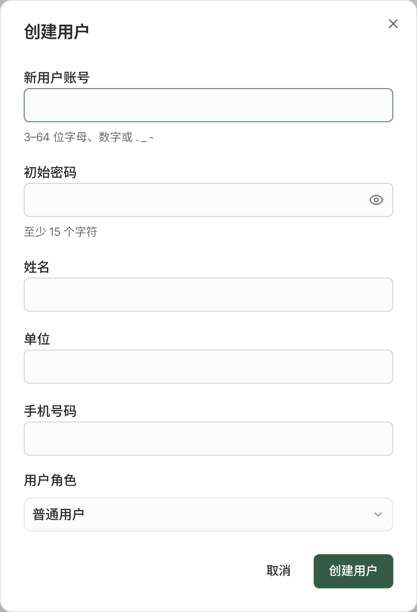
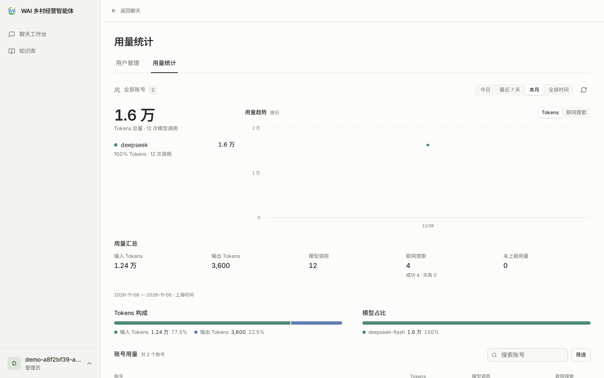

账号与用量管理
系统不开放自行注册。每个账号固定属于一个组织。公司管理员只开通和管理本组织的用户，也只看到本组织的用量；A 公司的管理员看不到 B 公司或内部测试组织的账号。
平台管理员先在「组织管理」创建组织，再在用户管理中选择该组织，创建公司管理员。以后由公司管理员开通员工账号。登录仍只填账号和密码，不需要选择组织；账号名在整套部署中不能重复。
#进入管理后台
只有管理员账号能看到「管理后台」。点左下角的用户卡片，选「管理后台」。
后台包含以下页面：
| 页面 | 用来做什么 |
|---|---|
| 用户管理 | 创建账号，维护资料，启用或禁用账号，重置密码，调整角色 |
| 用量统计 | 按账号查看模型和联网搜索的使用情况 |
| 组织管理 | 仅平台管理员可见，开通组织；用户管理可选择受管组织 |
后台左侧还有「聊天工作台」和「知识库」两个入口。知识库的维护见维护知识库。
#用户管理

页面显示符合搜索条件的用户总数。列表从服务端分页加载，每页 20 位用户。右侧的刷新按钮可以重新载入列表。下面是用户列表，每行包含：
| 列 | 内容 |
|---|---|
| 账号 | 登录用的账号名 |
| 姓名 / 单位 | 用户填写的姓名和所在单位；没填时显示「未填写」「未填写单位」 |
| 手机号码 | 用户的手机号码 |
| 角色 | 管理员或普通用户 |
| 状态 | 正常，或已禁用 |
| 创建日期 | 账号创建的日期 |
| 操作 | 编辑资料、重置密码、启用或禁用、调整角色 |
#查找用户
- 选择账号、姓名、单位或手机号作为搜索字段，再输入其中的一部分。服务端搜索当前受管组织的用户。
- 状态和角色只作为列表列展示，不提供筛选；需要变更时打开对应用户操作。
- 没有匹配的用户时，列表显示「没有匹配的用户，试试其他搜索条件。」
#创建用户
- 点「创建用户」。
- 填写下面的字段。全部必填。
- 确认，账号立即可用。
| 字段 | 规则 |
|---|---|
| 账号 | 3 到 64 位，只能用字母、数字和 . _ @ - |
| 初始密码 | 至少 15 个字符 |
| 姓名 | 用户的真实姓名 |
| 单位 | 用户所在单位 |
| 手机号码 | 中国大陆 11 位号码，或以 + 开头的国际号码 |
| 角色 | 普通用户或管理员 |
创建完成后，把账号和初始密码告诉用户。建议用户登录后，在「设置 → 常规 → 安全 → 修改密码」自己改掉初始密码。
平台管理员创建前可选择组织，公司管理员的组织固定。资料中的「单位」只是展示信息，修改它不会转移账号归属。页面不能创建平台管理员或把普通账号提升为平台管理员。
#编辑资料
点某一行的「编辑资料」，可以修改这位用户的姓名、单位和手机号码。只修改资料不会让用户退出登录。
用户也可以在自己的「设置 → 常规 → 个人资料」里修改这些信息，见账户设置。
#重置密码
用户忘记密码时，点「重置密码」，输入新密码（至少 15 个字符）并确认。
保存后，这个账号在所有设备上的登录都会失效。用户需要用新密码重新登录。
#启用和禁用
点「禁用」，确认后，这个账号无法再使用服务，现有登录会话也立即失效。
之后随时可以点「启用」，该账号恢复访问。禁用不会删除这个账号的聊天记录和用量记录。
#调整角色
点「设为管理员」或「设为普通用户」。角色调整会改变账号的管理权限。确认后，这个账号现有的登录会话会失效，需要重新登录。
#至少保留一位管理员
每个活动组织至少保留一位已启用的管理员，全局也保留平台管理员。禁用或降级最后一位时，服务器会拒绝操作，页面显示原因。
要换管理员，先创建新的管理员账号，再处理旧账号。
#管理登录会话
点某位用户的「登录会话」，查看有效会话的浏览器、登录时间和最近活动。可以撤销某个会话，也可以撤销该账号的全部会话。撤销后，对应设备需要重新登录；聊天记录和文件继续保留。
#用量统计

点上方的「用量统计」。
- 选统计周期。 今日、最近 7 天、本月、全部时间。
- 看使用概览。 公司管理员看到本组织的 Token 用量、模型调用次数和联网搜索次数；平台管理员可查看跨组织用量。
- 看趋势和分布。 趋势图按日（周期较长时按月）显示变化；模型用量分布按 Token 占比显示各个模型的用量。
- 看账号明细。 下方的账号列表列出每个账号的用量，每页 20 个账号。用搜索框按账号筛选；点某个账号的「查看」，进入这个账号的用量明细，里面有每日明细和模型明细。点「返回用量统计」回到总览。
#指标含义
| 项目 | 含义 |
|---|---|
| Tokens | 模型处理文字的计量单位。分输入（你提问和资料）与输出（助手回答）两项 |
| 模型调用 | 向聊天模型发起的调用次数 |
| 联网搜索 | 助手调用联网搜索的次数，分成功和失败；缓存命中也计入 |
| 日期 | 按北京时间划分 |
统计的范围：
- Token 采用模型服务商实际返回的用量，包括主智能体、专家智能体和自动生成标题等调用。
- 知识库的嵌入与重排、搜索服务商的账单不包含在内。
- 有些调用服务商没有返回 Token。页面会把它们单独标出，写着「未上报」。
- 页面显示统计的起始时间。起始时间之前的对话不补算。
- 删除对话、禁用账号，不会删除已经记录的用量。
- 目前只统计，不限制额度。
#管理员的可见范围
公司管理员和平台管理员都只能看到自己的对话、附件、工作区与交付。后台的账号资料和用量权限不会赋予私人内容读取权。知识库在组织内共享，平台管理员也只能读取自己所属组织的知识。